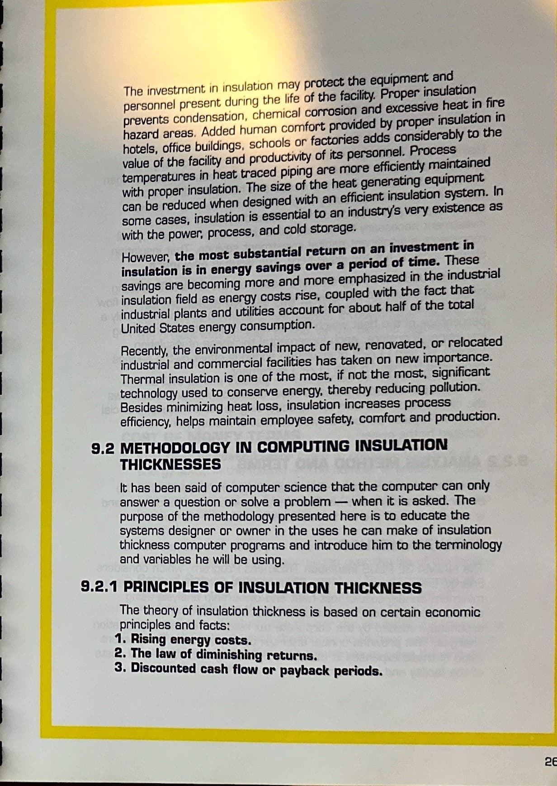
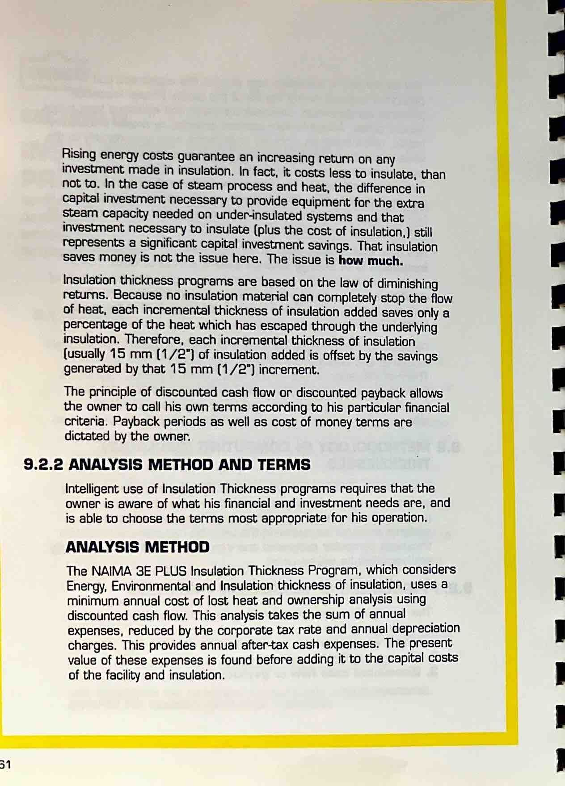
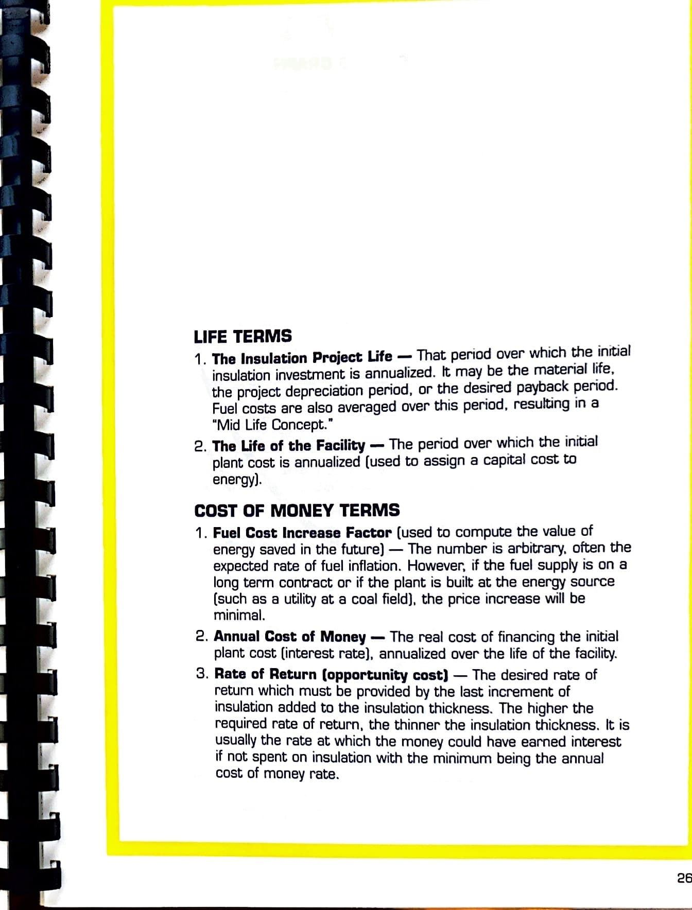
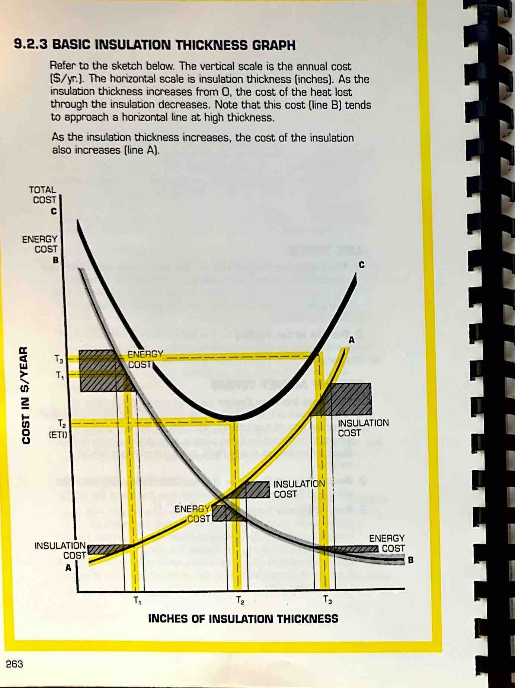
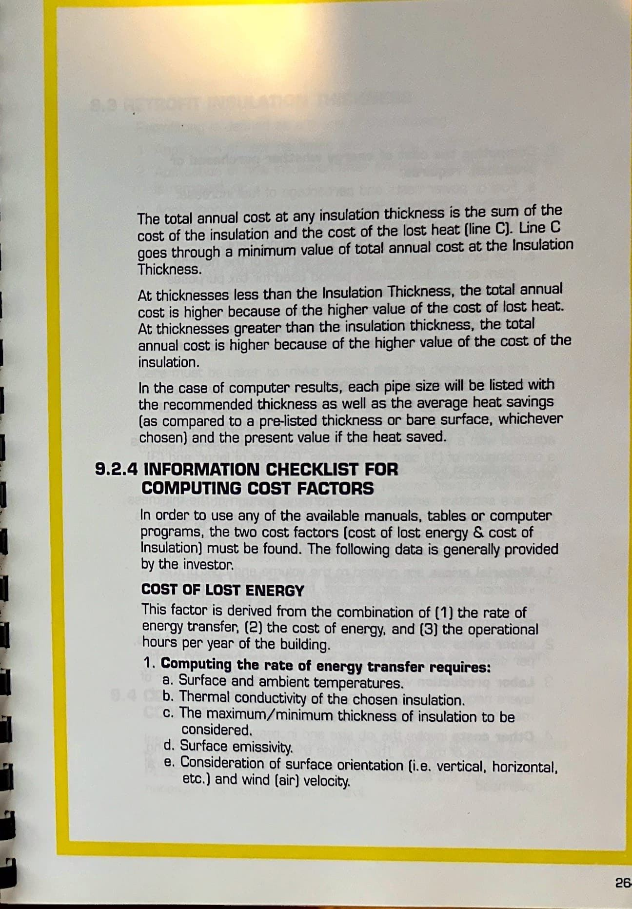
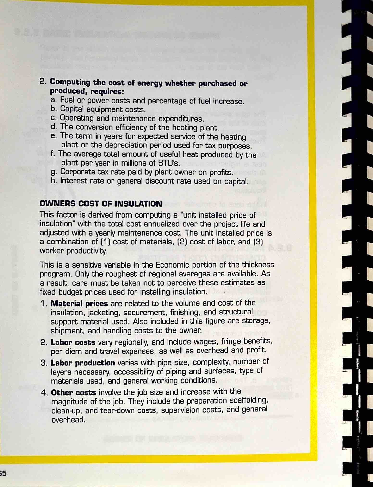
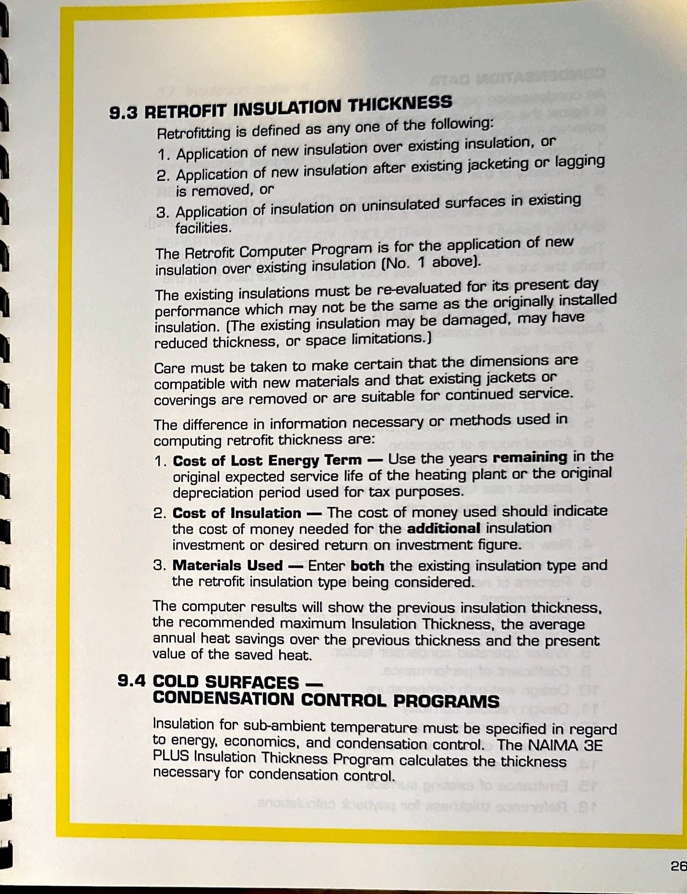
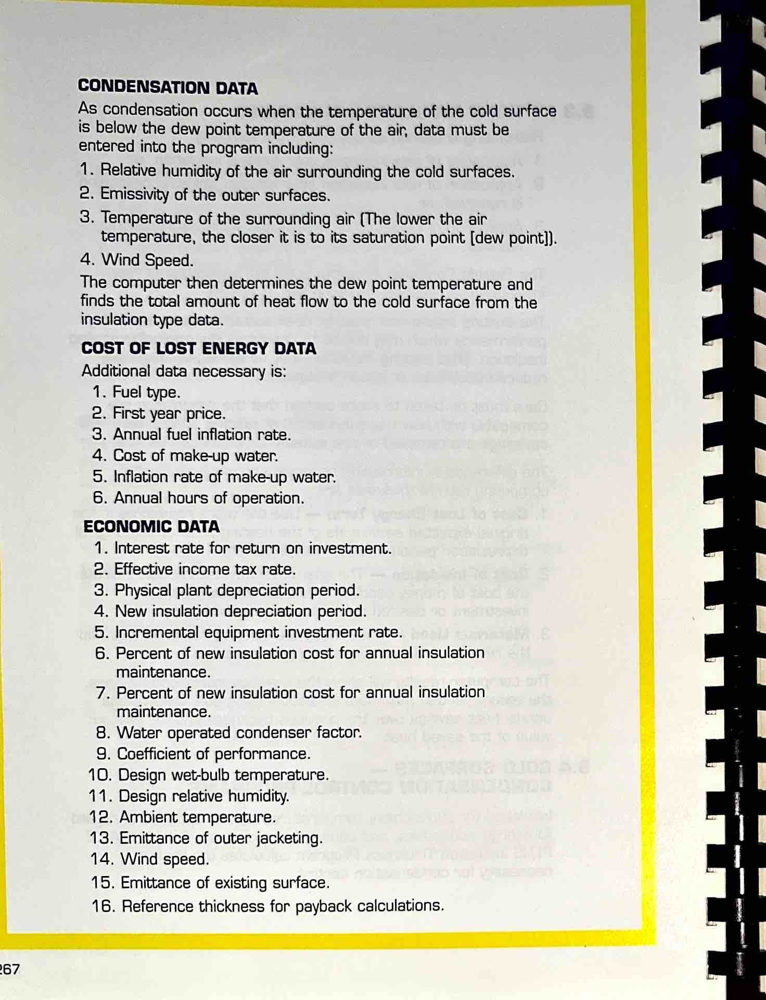
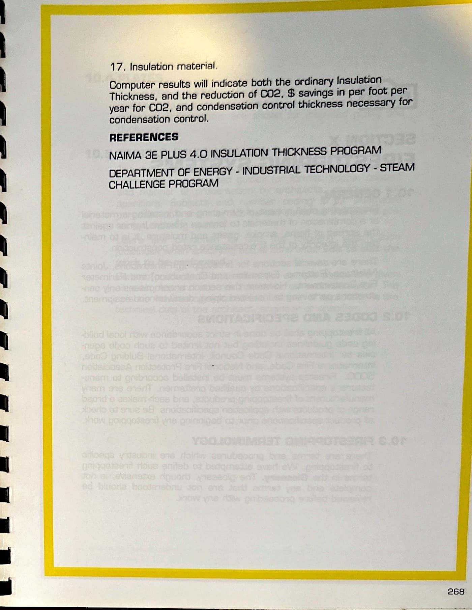

Section IX - Insulation Thickness Programs
Page 269

muca SECTION IX INSULATION THICKNESS PROGRAMS DETERMINING INSULATION THICKNESS FOR BTU HEAT LOSS OR GAIN DETERMINING INSULATION THICKNESS FOR SURFACE TEMPERATURE DETERMINING INSULATION THICKNESS FOR CONDENSATION CONTROL DETERMINING INSULATION THICKNESS FOR C02 REDUCTION 9.1 GENERAL The application of thermal insulation on pipe.
vessels and ducts is recognized as a necessary requirement in any construction activity.
The thickness and extent of insulation required has always been subject to arbitrary and imprecise decisions with little engineering or economic input.
No material incorporated in a modern construction project provides the owner with an earning asset throughout the life of the facility as does insulation.
However, because of the extreme difficulty in calculating what these values are, computer programs have been developed that address the economies of insulation performance.
The dE PLIJS Insulation Thickness Computer program was developed by the North American Insulation Manufacturers Association (NAIMA) and distributed by the United States Department of Energy, Office of Industrial Technology and other industry organizations concerned with energy efficiency.
The program is available free of charge and can be downloaded at: www.pipeinsulation.org.
The insulation thickness program, dE PLUS will: DETERMINE HEAT LOSS OR GAIN FOR COMMON INSULATION THICKNESSES, DETERMINE SURFACE TERMPERATURE OF INSULATION FOR PERSONNEL PROTECTION, DETERMINE THE REQUIRED THICKNESS OF INSULATION FOR CONDENSATION CONTROL, AND DETERMINE THE ECONOMIC PAYBACK AND ENVIORONMENTAL BENEFITS FOR COMMON INSULATION THICKNESS.
259
Page 270

The investment in Insulation may protect the equipment and personnel present during the life of the facility.
Proper insulation prevents condensation, chemical corrosion and excessive heat in fire hazard areas.
Added human comfort provided by proper insulation in hotels, office buildings.
schools or factories adds considerably to the value of the facility and productMty of its personnel.
Process temperatures in heat traced piping are more efficienuy maintained with proper insulation.
The size of the heat generating equipment can be reduced when designed with an efficient insulation system.
In some cases, insulation is essential to an industrys very existence as with the power, process, and cold storage.
However, the most substantial return on an investment in insulation is in energy savings over a period of time.
These savings are becoming more and more emphasized in the industrial insulation field as energy costs rise, coupled with the fact that industrial plants and utilities account for about half of the total United States energy consumption.
Recently, the environmental impact of new, renovated, or relocated industrial and commercial facilities has taken on new importance.
Thermal insulation is one of the most, if not the most.
significant technology used to conserve energy, thereby reducing pollution.
Besides minimizing heat loss, insulation increases process efficiency, helps maintain employee safety, comfort and production.
9.2 METHODOLOGY IN COMPUTING INSULATION THICKNESSES It has been said of computer science that the computer can onty answer a question or solve a problem — when it is asked.
The purpose of the methodology presented here is to educate the systems designer or owner in the uses he can make of insulation thickness computer programs and introduce him to the terminology and variables he will be using.
9.2.1 PRINCIPLES OF INSULATION THICKNESS The theory of insulation thickness is based on certain economic principles and facts: 1.
Rising energy costs.
2.
The law of diminishing returns.
3.
Discounted cash flow or payback periods.
2
Page 271

Rising energy costs guarantee an increasing return on any invesbment made in insulation.
In fact, it costs less to insulate.
than not to.
In the case of steam process and heat, the difference in capital investment necessary to provide equipment for the extra steam capacity needed on under-insulated systems and that investrnent necessary to insulate (plus the cost of insulation.) still represents a significant capital investrnent savings.
That insulation saves money is not the issue here.
The issue is how much.
Insulation thickness programs are based on the law of diminishing rewrns.
Because no insulation material can completely stop the flow of heat, each incremental thickness of insulation added saves only a percentage of the heat which has escaped through the underlying insulation.
Therefore, each incremental thickness of insulation (usually 15 mm (1/2") of insulation added is offset by the savings generated by that 15 mm (1/2") increment.
The principle of discounted cash flow or discounted payback allows the owner to call his own terms according to his particular financial criteria.
Payback periods as well as cost of money terms are dictated by the owner.
9.2.2 ANALYSIS METHOD AND TERMS Intelligent use of Insulation Thickness programs requires that the owner is aware of what his financial and investment needs are, and is able to choose the terms most appropriate for his operation.
ANALYSIS METHOD The NAIMA dE PLUS Insulation Thickness Program, which considers Energy, Environmental and Insulation thickness of insulation, uses a minimum annual cost of lost heat and ownership analysis using discounted cash flow.
This analysis takes the sum of annual expenses, reduced by the corporate tax rate and annual depreciation charges.
This provides annual after-tax cash expenses.
The present value of these expenses is found before adding it to the capital costs of the facility and insulation.
Page 272

LIFE TERMS 1 .
The Insulation Project Life — That pertod over which the initial insulation investment is annualized.
It may be the material life, the project depreciation period, or the desired payback period.
Fuel costs are also averaged over this period, resulting in a "Mid Life Concept." 2.
The Life of the Facility — The period over which the intial plant cost is annualized (used to assign a capital cost to energy).
COST OF MONEY TERMS 1.
Fuel Cost Increase Factor (used to compute the value of energy saved in the future) — The number is arbitrary.
often the expected rate of fuel inflation.
However, if the fuel supply is on a long term contract or if the plant is built at the energy source (such as a utiliby' at a coal field), the price increase will be minimal.
2.
Annual Cost of Money — The real cost of financing the initial plant cost (interest rate), annualized over the life of the faciliW.
3.
Rate of Return (opportunity cost) — The desired rate of return which must be provided by the last increment of insulation added to the insulation thickness.
The higher the required rate of return, the thinner the insulation thickness.
It is usually the rate at which the money could have earned interest if not spent on insulation with the minimum being the annual cost of money rate.
26
Page 273

9.2.3 BASIC INSULATION THICKNESS GRAPH Refer to the sketch below.
The vertical scale is the annual cost (S/yr.).
The horizontal scale is insulation thickness (inches).
As the insulauon thickness increases from O, the cost of the heat lost through the insulation decreases.
Note that this cost (line B) tends to approach a horizontal line at high thickness.
As tie insulation thickness increases, the cost of the insulation also increases (line A).
TOTAL COST ENERGY COST ENERGY COST (ETD ENERGY OST INSULATION COST INSULATION i COST INSULATION COST ENERGY COST INCHES OF INSULATION THICKNESS 263
Page 274

The total annual cost at any insulation thickness is the sum of the cost of the insulation and the cost of the lost heat (line C).
Line C goes through a minimum value of total annual cost at the Insulation Thickness.
At thicknesses less than the Insulation Thickness, the total annual cost is higher because of the higher value of the cost of lost heat.
At thicknesses greater than the insulation thickness, the total annual cost is higher because of the higher value of the cost of the insulation.
In the case of computer results, each pipe size will be listed with the recommended thickness as well as the average heat savings (as compared to a pre-listed thickness or bare surface, whichever chosen) and the present value if the heat saved.
9.2.4 INFORMATION CHECKLIST FOR COMPUTING COST FACTORS In order to use any of the available manuals, tables or computer programs, the two cost factors (cost of lost energy & cost of Insulation) must be found.
The following data is generally provided by the investor.
COST OF LOST ENERGY This factor is derived from the combination of (1) the rate of energy transfer, (2) the cost of energy, and (3) the operational hours per year of the building.
1 .
Computing the rate of energy transfer requires: a.
Surface and ambient temperatures.
b.
Thermal conductivity of the chosen insulation.
c.
The maximum/minimum thickness of insulation to be considered.
d.
Surface emissivity.
e.
Consideration of surface orientation (i.e.
vertical, horizontal.
etc.) and wind (air) velocity.
26
Page 275

2.
Computing the cost of energy whether purchased or produced, requires: a.
Fuel or power costs and percentage of fuel increase.
b.
Capital equipment costs.
c.
Operating and maintenance expenditures.
d.
The conversion efficiency of the heating plant.
e.
The term in years for expected service of the heating plant or the depreciation period used for tax purposes.
f.
The average total amount of useful heat produced by the plant per year in millions of BTU's.
g.
Corporate tax rate paid by plant owner on profits.
h.
Interest rate or general discount rate used on capital.
OWNERS COST OF INSULATION This factor is derived from computing a "unit installed price of insulation" with the total cost annualized over the project life and adjusted with a yearly maintenance cost.
The unit installed price is a combination of (1) cost of materials, (2) cost of labor, and (8) worker productivity.
This is a sensitive variable in the Economic portion of the thickness program.
Only the roughest of regional averages are available.
As a result, care must be taken not to perceive these estimates as fixed budget prices used for installing insulation.
1 .
Material prices are related to the volume and cost of the insulation, jacketing, securement, finishing, and structural support material used.
Also included in this figure are storage, shipment, and handling costs to the owner.
2.
Labor costs vary regionally, and include wages, fringe benefits, per diem and travel expenses, as well as overhead and profit.
8.
Labor production varies with pipe size, complexity, number of layers necessary, accessibility of piping and surfaces, type of materials used, and general working conditions.
4.
Other costs involve the job size and increase with the magnitude of the job.
They include the preparation scaffolding, clean-up, and tear-down costs, supervision costs, and general overhead.
55
Page 276

9.3 RETROFIT INSULATION THICKNESS Retrofitting is defined as any one of the following: 1.
Application of new insulation over existing insulation, or 2.
Application of new insulation after existing jacketing or lagging is removed, or 3.
Application of insulation on uninsulated surfaces in existing facilities.
The Retrofit Computer Program is for the application of new insulation over existing insulation (No.
1 above).
The existing insulations must be re-evaluated for its present day performance which may not be the same as the originally installed insulation.
(The existing insulation may be damaged, may have reduced thickness, or space limitations.) Care must be taken to make certain that the dimensions are compatible with new materials and that existing jackets or coverings are removed or are suitable for continued service.
The difference in information necessary or methods used in computing retrofit thickness are: 1.
Cost of Lost Energy Term — Use the years remaining in tie original expected service life of the heating plant or the original depreciation period used for tax purposes.
2.
Cost of Insulation — The cost of money used should indicate the cost of money needed for the additional insulation investment or desired return on investment figure.
3.
Materials used — Enter both the existing insulation type and the retrofit insulation type being considered.
The computer results will show the previous insulation thickness, the recommended maximum Insulation Thickness, the average annual heat savings over the previous thickness and the present value of the saved heat.
9.4 COLD SURFACES — CONDENSATION CONTROL PROGRAMS Insulation for sub-ambient temperature must be specified in regard to energy, economics, and condensation control.
The NAIMA 3E PLUS Insulation Thickness Program calculates the thickness necessary for condensation control.
2
Page 277

CONDENSATION DATA As condensation occurs when the temperature of the cold surface is below the dew point temperature of the air, data must be entered into the program including: 1.
Relative humidity of the air surrounding the cold surfaces.
2.
Emissivity of the outer surfaces.
a.
Temperature of the surrounding air (The lower the air temperature, the closer it is to its saturation point (dew point]).
4.
Wind Speed.
The computer then determines the dew point temperature and finds the total amount of heat flow to the cold surface from the insulation Wpe data.
COST OF LOST ENERGY DATA Additional data necessary is: 1.
Fuel type.
2.
first year price.
3.
Annual fuel inflation rate.
4.
Cost of make-up water.
5.
Inflation rate of make-up water.
6.
Annual hours of operation.
ECONOMIC DATA 1.
Interest rate for return on investment.
2.
Effective income tax rate.
3.
Physical plant depreciation period.
4.
New insulation depreciation period.
5.
Incremental equipment investment rate.
6.
Percent of new insulation cost for annual insulation maintenance.
7.
Percent of new insulation cost for annual insulation maintenance.
8.
Water operated condenser factor.
9.
Coefficient of performance.
10.
Design wet-bulb temperature.
11.
Design relative humidity.
12.
Ambient temperature.
18.
Emittance of outer jacketing.
14.
Wind speed.
15.
Emittance of existing surface.
16.
Reference thickness for payback calculations.
Page 278

17.
Insulation material.
Computer results will indicate both the ordinary Insulation Thickness, and the reduction of C02, $ savings in per foot per year for C02, and condensation control thickness necessary for condensation control.
REFERENCES NAIMA 3E PLUS 4.0 INSULATION THICKNESS PROGRAM DEPARTMENT OF ENERGY - INDUSTRIAL TECHNOLOGY - STEAM CHALLENGE PROGRAM 268